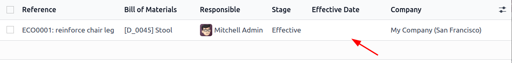

Control de versiones¶
Use la Gestión del ciclo de vida del producto (PLM) de Odoo para gestionar versiones anteriores de las LdM. Guarde instrucciones de ensamblaje antiguas, detalles de los componentes y archivos pasados de diseño de los productos, al mismo tiempo que mantiene fuera detalles anteriores de la LdM de producción.
Tenga a la mano versiones previas de la LdM para cuando sean necesarias. Además, use el PLM para rastrear que versión de la LdM estuvo activa en fechas específicas para quitarlas del mercado o atender quejas de los clientes.
Cada versión de la LdM se guarda en una orden para cambio de ingeniería para tener organizadas las pruebas y las mejoras sin interrumpir las operaciones normales de fabricación.
Ver también
Versión actual de la LdM¶
Para ver la versión actual de la LdM que se está utilizando en producción, vaya a la y seleccione la LdM que desee de la lista. Luego, abra la pestaña Varios donde aparece la Versión actual de la LdM.
Nota
También puede acceder a las LdM desde la .

Historial de la versión¶
Para gestionar todas las versiones antiguas, actuales y futuras de una LdM, primero vaya a la y haga clic en la LdM que desee.
Desde la página de la LdM, haga clic en el botón inteligente de orden para cambio de ingeniería y cambie la vista al modo lista seleccionando el icono ≣ (cuatro líneas horizontales) ubicado en le esquina superior derecha.
Nota
El botón inteligente de la orden para cabio de ingeniería es visible en la LdM solo si está instalada la aplicación PLM.

En la lista de órdenes para cambio de ingeniería para el producto, vaya a la barra de navegación ubicada en la parte superior y haga clic en el icono ▼ (flecha apuntando hacia abajo) ubicado a la derecha para acceder al menú desplegable de Filtros.
Luego, filtre por órdenes para cambio de ingeniería Hechas para ver: el historial de la revisión de la LdM, el usuario Responsable que aplicó el cambio y la Fecha efectiva de la LdM.
Haga clic en cada orden para cambio de ingeniería para ver los componentes pasados y los archivos de diseño asociados con la LdM.

Nota
Si el campo Fecha efectiva esta vacío, la fecha Efectiva de la orden para cambio de ingeniería se establece automáticamente a Tan pronto como sea posbile y no se registran fechas en el historial de revisión de la LdM
Truco
Otra opción para revisar cuándo se empezó a utilizar la LdM es en el chatter y colocando el ratón sobre el tiempo en el que la orden para cambio de ingeniería se movió a etapa de cerrado.
Archivos de diseño¶
Adjunte archivos de diseño asistido por computadora (CAD, por sus siglas en inglés), PDF, imágenes u otro material de diseño a la LdM.
Para hacerlo, vaya a la y seleccione la LdM que desee. En dicha LdM vaya al chatter y haga clic en el icono de üìé (clip).
Ahora aparecerán los archivos asociados con la LdM en la sección de Archivos. Para agregar más archivos de diseño, haga clic en el botón Adjuntar archivos.

Gestione archivos de diseño en una orden para cambio de ingeniería¶
Agregue, modifique y elimine archivos de una orden para cambio de ingeniería. Una vez confirmada y aplicada, los nuevos archivos estarán vinculados automáticamente a la LdM de producción. Los archivos archivados se eliminarán de la LdM pero todavía podrá acceder a ellos en la orden para cambio de ingeniería.
Para gestionar los archivos de diseño en la orden para cambio de ingeniería, vaya a la y seleccione la orden que desee. Luego, abra la página de Archivos adjuntos haciendo clic en el botón inteligente de Documentos.
Pase el cursor por encima de cada archivo adjunto para ver el icono ︙(tres puntos verticales). Desde ahí, elija si quiere Editar, Eliminar o Descargar el archivo. Cualquier cambio que le haga a estos archivos se mantendrán dentro de la orden para cambio de ingeniería y se aplicarán a la LdM de producción una vez:ref:aplicados los cambios <plm/eco/apply-changes>.
Example
En la orden para cambio de ingeniería Fabricar 60% del teclado, los archivos de diseño son de la LdM original Teclado 100%. Para reemplazar el PDF del teclado, haga clic en el botón inteligente Documentos.
En la página de Archivos adjuntos, pase el cursor sobre el archivo de diseño Manual para teclado100%.pdf y haga clic en el icono ︙ (trees puntos verticales). Luego, haga clic en la opción Eliminar para archivar el archivo.
Luego, en la misma página de Archivos adjuntos, haga clic en el botón Subir para subir un nuevo archivo de diseño llamado Manual para teclado 60%.

Nota
Los archivos archivados no se eliminan de forma permanente, aún puede acceder a ellos en la orden de cambio de ingeniería anterior o como un archivo archivado en la última ECO donde se realizó.
Aplicar transferencia de base¶
Odoo simplifica la resolución de conflictos de fusión para las órdenes de cambio de ingeniería simultáneas en el mismo producto.
Pueden ocurrir conflictos cuando la LdM de producción se actualiza mientras otras órdenes de cambio de ingeniería están modificando la versión anterior. Las diferencias entre las listas de materiales nuevas y anteriores de producción aparecen en la pestaña Cambios de LdM de órdenes de cambio de ingeniería anteriores, visible solo bajo esta circunstancia.
Para resolver los conflictos y mantener los cambios de la ECO, haga clic en el botón Aplicar transferencia de base.
Example
Se crean dos órdenes de cambio de ingeniería, ECO0011 y ECO0012, mientras la versión actual de la lista de materiales es la número 5. En la ECO0011 se agregó un nuevo componente, Estabilizador para la barra de espacio, y luego se aplicaron los cambios. Esto quiere decir que la versión actual de la LdM ahora es la número 6.

Esto significa que la ECO0012 está modificando una lista de materiales que no está actualizada. Como se muestra en la pestaña Cambios de LdM de órdenes de cambio de ingeniería anteriores, la |LdM| no incluye el Estabilizador para la barra de espacio.
Para garantizar que se mantengan los cambios aplicados con ECO0011 cuando ocurran los cambios en la ECO0012, haga clic en el botón Aplicar transferencia de base para aplicar los cambios de la orden de cambio de ingeniería sin afectar los cambios que ya se habían hecho a la ECO0012.